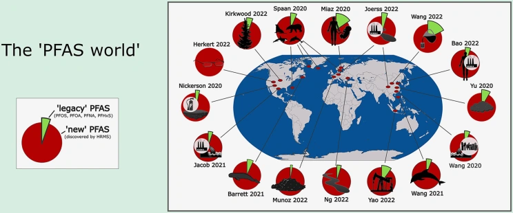
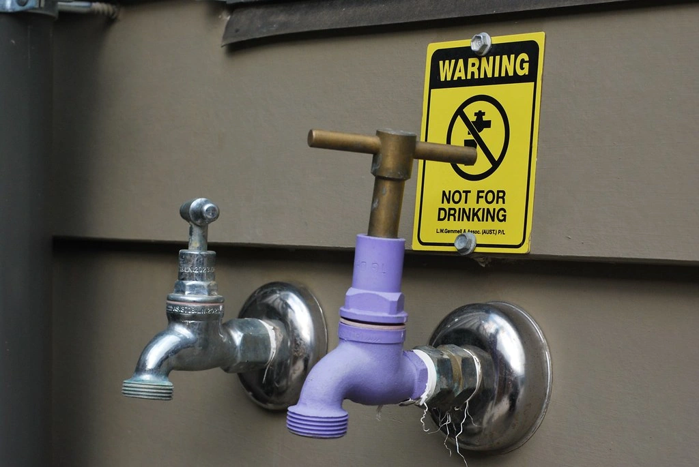
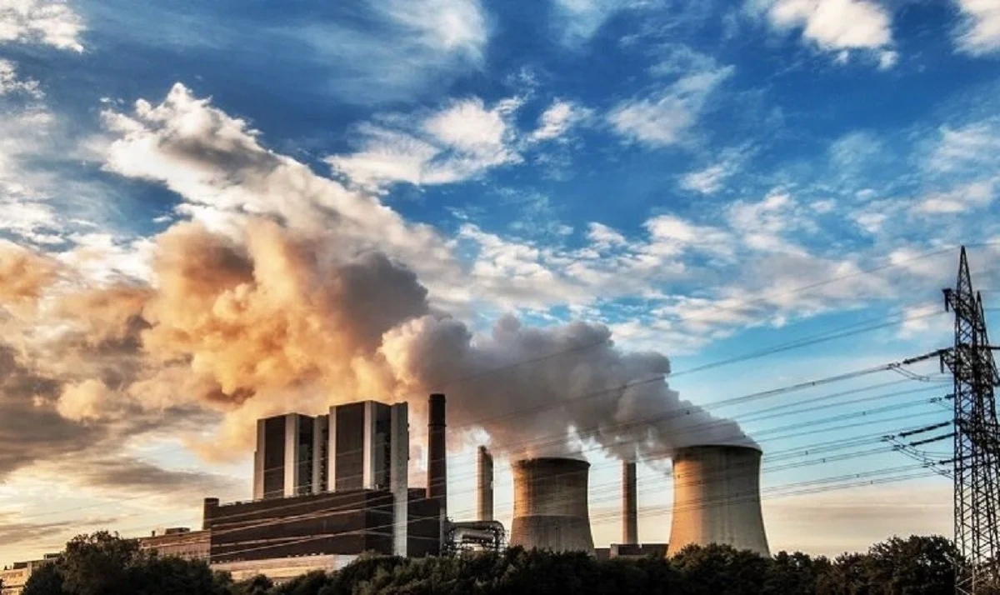

Full article · LinkedIn
I Reviewed 20 Environmental-Tech Websites. Here’s What They Got Wrong About Their Science.
A review of 20 environmental technology websites examining how PFAS treatment, water reuse, carbon accounting, and monitoring claims communicate their evidence and limits.

“Non-detect.” “Carbon removal.” “Up to 95%.” “Real-time.”
I kept finding phrases like these while reading environmental technology websites. Each can describe a real result. Each can also leave out the one detail that tells a reader what the result actually means.
Non-detect for which chemicals, using which method? Ninety-five percent of what? Was the carbon removed from the atmosphere, or was an emission avoided? Does real-time mean a camera is collecting images continuously, or that a satellite can see a particular place whenever someone needs an answer?
Those questions do not fit easily into a homepage headline. They still matter. If a buyer, regulator, or community member has to reconstruct the limits of a claim from a FAQ and a buried PDF, the website has made the science harder to trust than it needs to be.
I reviewed the public technology and product pages of 20 companies: five working on PFAS treatment, five on carbon capture, removal, or lower-carbon materials, five on water treatment or water-risk tools, and five on environmental monitoring. I followed relevant case studies, technical pages, and FAQs where they were available. This was a purposive review of website communication - not a conclusive test of the technologies, a representative industry survey, or a finding that all (or any) of the 20 companies made false claims. In fact, many explained important limits unusually well.
None of us, however, are impervious to mistakes. And in these industries, an otherwise small mistake can cost you quite a lot of profit.

PFAS removal is not PFAS destruction
If a filter removes PFAS from drinking water, the chemicals have gone somewhere. They may be held on a medium or concentrated in a smaller waste stream. That can be valuable treatment. It does not, by itself, mean the PFAS molecules were destroyed.
This distinction was clear on Cyclopure’s DEXSORB page. The company describes a material that captures PFAS, then separates and concentrates the waste so it can be processed for destruction elsewhere. The page gives the reader the next step in the material’s journey instead of making removal sound like disappearance.
Destruction claims need their own boundaries. If a site says its process reached “non-detect,” I want to know the named compounds, sample matrix, analytical method, reporting limits, and what happened to possible byproducts and other outputs. A non-detect result means a substance was not detected under a particular test’s conditions. It is not proof that every PFAS compound is absent.
The EPA’s 2026 interim guidance on PFAS destruction and disposal, issued for public comment, asks evaluators about process inputs and outputs, destruction efficiency, possible products of incomplete destruction, and fluorine mass balance. That is a useful way to read a website claim, even though the guidance is not a scorecard for these companies. EPA also explains that Method 1633A measures 40 specific PFAS. A result for a defined list of analytes cannot stand in for all possible PFAS.
Aquagga’s industrial pilot case study is more informative because it reports its claimed greater-than-99% PFAS destruction separately from greater-than-95% measured defluorination, and describes the fluorine mass-balance work and tested conditions. Those are the company’s reported results from a particular demonstration, not a performance guarantee for every waste stream. The distinction survives the marketing copy.

A percentage without its denominator is a different claim
“Up to 95%” feels precise. Without the denominator, it is almost always empty.
On its homepage, Hydraloop says its systems can recycle up to 95% of greywater. It separately says that reuse can cut fresh-water demand by up to 45%. Those numbers answer different questions. A reader who confuses the first with a 95% reduction in a building’s total water use would come away with the wrong expectation.
The same problem appears outside water reuse. A model’s recall is the share of actual cases it finds. Its precision is the share of its positive predictions that turn out to be correct. BlueConduit’s lead service line page describes both measures and explains that representative field investigations help develop its predictions. Its reported performance is still context dependent, but the reader can at least see what is being counted.
Every striking environmental percentage should carry a small piece of grammar: of what, compared with what, measured where, and under what conditions? A case study can hold the full methods. The first claim should carry enough context to prevent the obvious wrong reading.

Captured carbon, avoided emissions, and removal are not interchangeable
This was the carbon section’s recurring trap: a ton of CO₂ captured at a facility is not automatically a ton removed from the atmosphere. A lower-carbon product can avoid emissions relative to a conventional product without becoming carbon removal. And gross capture is not the same as net climate benefit once energy, transport, materials, and storage are counted.
The U.S. Department of Energy’s direct air capture life-cycle guidance separates CO₂ captured, atmospheric CO₂ captured and stored, and net CO₂e (carbon dioxide equivalent) removal. Those boundaries can produce different answers for the same system. The source of the carbon and its eventual fate matter as much as the capture equipment.
Charm Industrial’s FAQ gives a useful example of staying with the net result: it says one tonne of biomass entering its process corresponds to roughly 0.85 tonnes of net atmospheric CO₂e removal on a life-cycle basis, then points readers to analyses of individual deliveries. The number has a denominator and a boundary.
CarbonCure also separates CO₂ mineralized in concrete from additional emissions avoided by using less cement in an illustrative calculation. CarbonBuilt’s environmental benefits page goes a step further on accounting: it tells customers that certain CO₂-related attributes have already been sold and should not be claimed again. That is a detail a product page could easily skip. It prevents two parties from claiming the same benefit.
These pages do not settle every life-cycle question. They show how to state the accounting boundary before a single impressive number starts doing several jobs.
What environmental monitoring AI and satellites can miss
An AI model can be useful without being all-seeing. So can a satellite. But “continuous,” “real-time,” and “accurate” can blur several different stages: observing a place, detecting an event, verifying it, and delivering an alert.
Some monitoring language in this review would have been clearer if its coverage limits appeared near the promise. The reader needs to know when a sensor has a view, what can block it, and what happens between a possible detection and an alert.
Pano AI’s product page describes a network of cameras and human review of detections. GHGSat’s technology page states a satellite methane detection threshold of 100 kilograms per hour and says observations are delivered within 24 hours of an overpass. That is considerably more useful than an unsupported promise to detect every leak immediately. A threshold is not a guarantee at every site in every condition, and delivery after an overpass is not continuous observation.
The same limits apply to imagery. Planet’s documentation identifies clouds, haze, shadow, and other conditions that affect whether an image is usable. “Near-daily imagery” can describe an acquisition schedule; it does not promise a clear, usable view of every location every day.
The useful question for an environmental monitoring site is simple: what can the system miss, and when will someone know? A candid answer helps a customer design around the gap. It also makes a good result more believable.
Put the qualification where the claim is made
Many of the details I wanted were somewhere on the companies’ sites. A product page described the relevant feedwater. A FAQ explained the test. A case study supplied the comparator. The weakness was often the distance between that context and the line most visitors would see first.
I would not put a methods section in every hero banner. I would put the essential limit next to the claim and link the complete evidence from there. For a PFAS result, that might mean the tested matrix and analytes. For water reuse, the source water and end use. For a carbon claim, the source of CO₂ and the life-cycle boundary. For a model, the metric, test population, and conditions in which performance changes.
A potential rewrite:
Broad: “Our process eliminates PFAS in any water.”
Specific: “In a pilot using [defined waste stream], concentrations of [named PFAS] fell below [stated reporting limits] at [tested flow rate]. See the analytical method, fluorine balance, byproduct testing, and operating conditions.”
The second version has blanks because the evidence has to supply them. If it cannot, the first version should not make the promise.
Environmental technology companies are being asked to explain complicated work quickly. I understand the pressure to simplify, believe me. But the strongest sites in this review did something more useful than just that: they made the limits easy to find. They told me what was measured, what was inferred, and what still depended on the site or operating conditions.
That is the sentence I would edit first on almost any environmental-tech homepage: the one that sounds clearest until you ask, “Under what conditions?”
If you've noticed that your website may be struggling with some of these same patterns, PaulWrites will offer you one free outline - just reach out!
About this project
See the assignment, process, and Paul’s contribution.
Paul selected the review framework, examined the companies' public pages and supporting sources, and wrote and published the article independently.
Related work
Continue through the subject.

Think Your Water Is Clean? Climate Change Might Be Proving You Wrong
What harmful algal blooms can look like, why climate conditions matter, and why apparently clear water is not the whole story.

Carbon Offsets Are Dead. Long Live Carbon Insetting.
Why carbon offsets have lost credibility—and why investing inside a company’s own value chain may be more accountable.

How Artificial Intelligence Is Reshaping Corporate Sustainability
AI has environmental costs, but it is also changing how companies measure, model, and manage sustainability work.